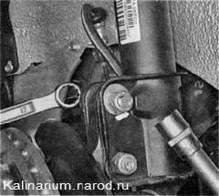
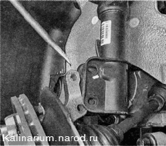

Стоика передней подвески - снятие и установкаДля выполнения работы потребуется надежная подставка под автомобиль. Снятие Стойки следует заменять парой, даже если неисправна только одна. 1. Подготавливаем автомобиль к выполнению работы 2. Снимаем переднее колесо 3. Отсоединяем наконечник рулевой тяги от поворотного рычага стойки. Если снимаете стойку для разборки, ослабьте затяжку гайки штока амортизатора специальным приспособлением или накидным ключом на 22 мм, удерживая шток рожковым ключом на 9 мм. 4. Накидным ключом на 13 мм ослабляем затяжку трех гаек крепления верхней опоры стойки к кузову автомобиля. 5. Чтобы минимизировать нарушение угла развала передних колес, кернером или краской наносим метки на болт верхнего крепления поворотного кулака и на кронштейн стойки. 6. Торцовым ключом на 17 мм отворачиваем гайки болтов верхнего и нижнего крепления поворотного кулака к стойке, удерживая болты от проворачивания накидным ключом на 17 мм. 
7. Снимаем с болтов шайбы (шайба верхнего болта эксцентриковая) и вынимаем болты. 8. Отверткой или монтажной лопаткой выводим поворотный кулак из зацепления с кронштейном стойки.  9. Выводим тормозной шланг из кронштейна стойки. 10. Отворачиваем гайки крепления верхней опоры стойки и С1шмаем стойку в сборе. Установка Устанавливаем стойку в обратной последовательности, при этом метка (стрелка) на верхней опоре должна быть обращена к передней части автомобиля. Гайки крепления верхней опоры к кузову затягиваем моментом 19,6— 24,2 Н-м (2,0-2,4 кгс-м). Перед затягиванием гаек болтов крепления поворотного кулака к стойке совмещаем метки, нанесенные на эксцентриковом болте и кронштейне. Затягиваем гайки болтов моментом 77,5-96,1 Н-м (7,9-9,8 кгс-м). |